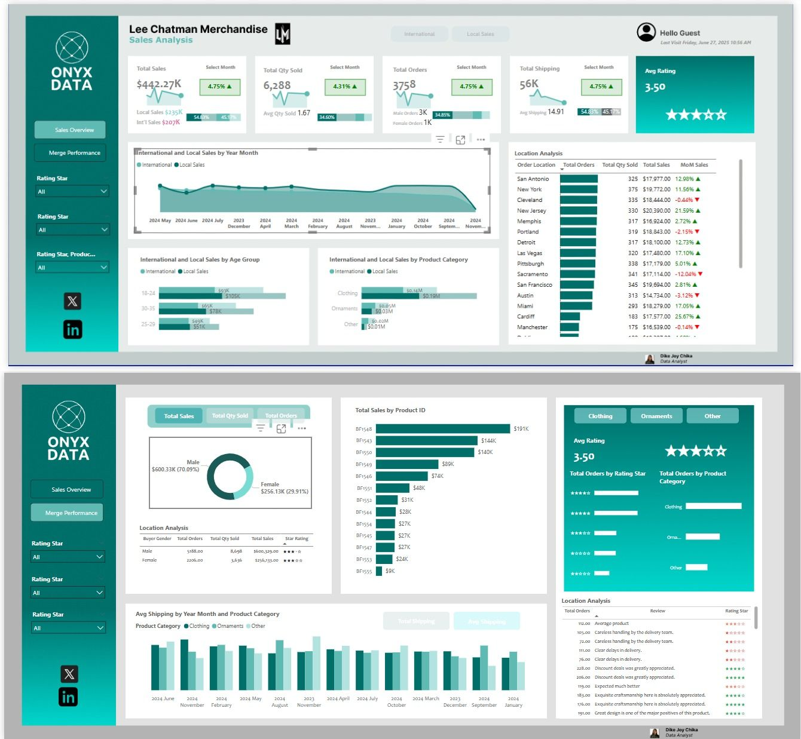
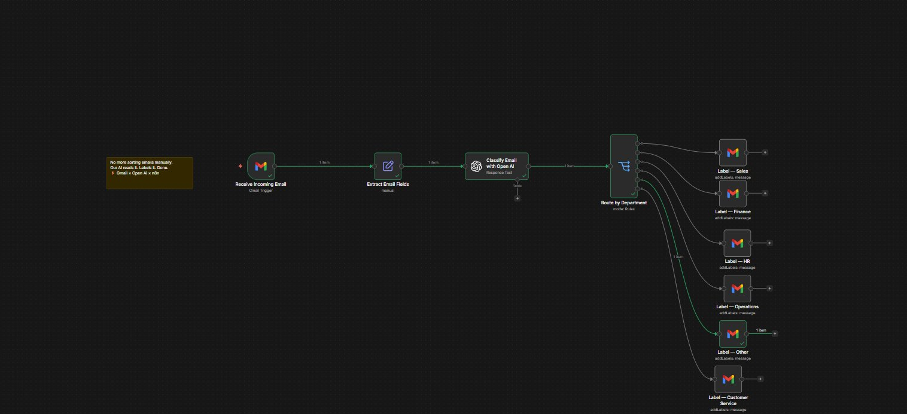

Featured work
Projects that make an impact

Sales Performance Analysis
End to end sales dashboard for Lee Chatman Merchandise tracking $442K in revenue and 6,288 units sold across international and local markets. Includes location analysis across 15 cities, age group segmentation and product category breakdown.

Employee Demographics & Churn Analysis
Analysed workforce data for 3,000 employees uncovering attrition drivers by marital status, race, age group and work type. 82% retention rate tracked across locations with gender and department breakdowns.

Patient Visit & Emergency Care Dashboard
4 page healthcare dashboard analysing 62,565 patient visits with 5.26 day average stay. Covers arrival and discharge trends, diagnosis outcomes including Heart Attack, Migraine and Pneumonia, insurance providers and emergency priority triage across 3 hospitals.

Supply Chain Performance Analysis
Advanced SQL analysis of supply chain operations covering delivery performance, order fulfilment rates, supplier analysis, shipping efficiency and late delivery risk using CTEs, window functions and complex joins.

Business Questions SQL Analysis
20 SQL queries from foundations to advanced covering CTEs, window functions, Pareto ABC classification, recursive org hierarchy, rolling averages, churn detection and month over month revenue growth.

Gym Management Automation System
Built 4 automated workflows handling the full gym member lifecycle including registration, photo upload to Cloudinary, 7 day and same day expiry reminders via Gmail and Telegram and subscription renewal via Paystack webhook.

AI Powered Email Classifier
Automated email routing system using OpenAI to classify incoming emails by department including Sales, Finance, HR, Operations and Customer Service then auto label them in Gmail with zero manual sorting needed.